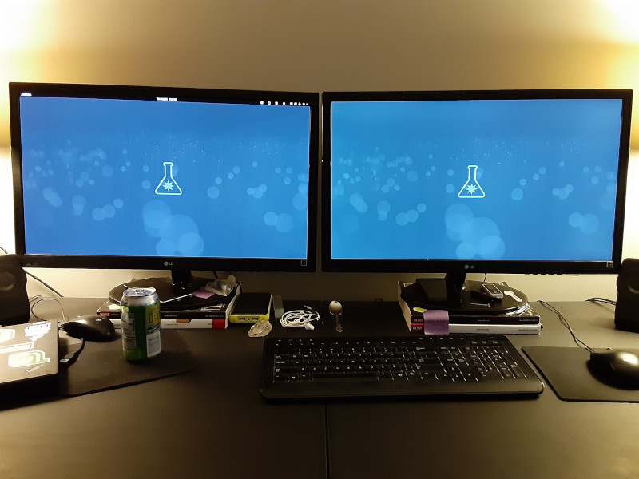
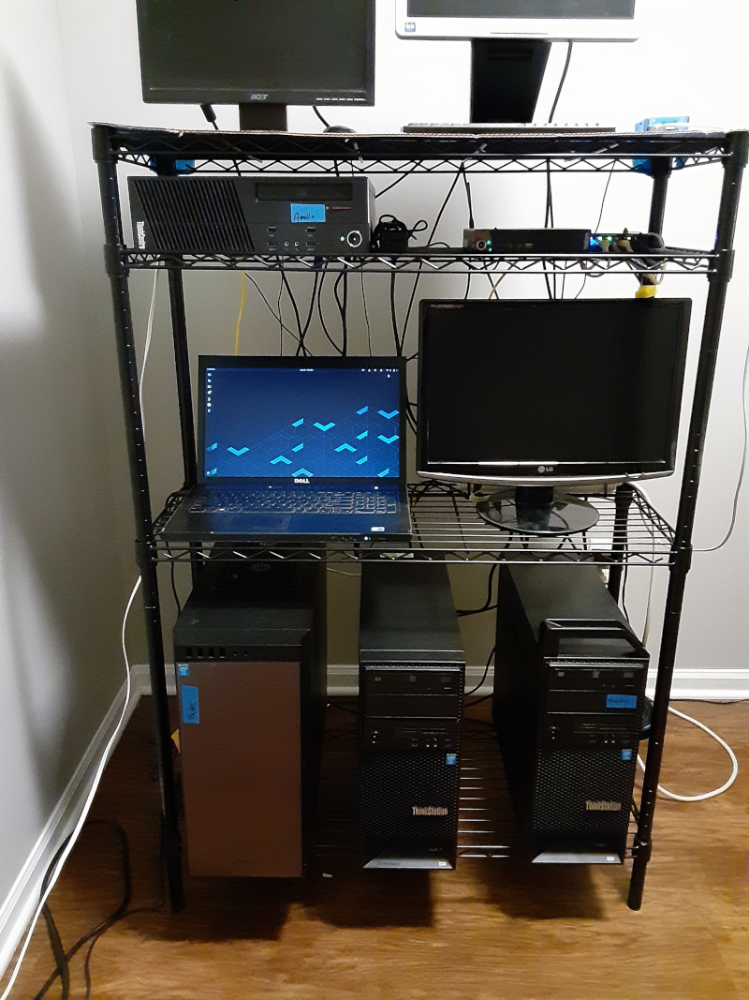
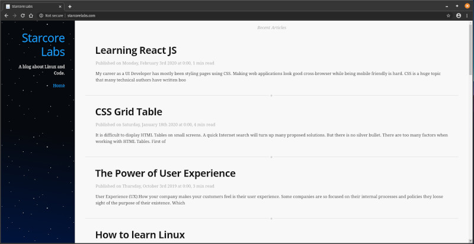
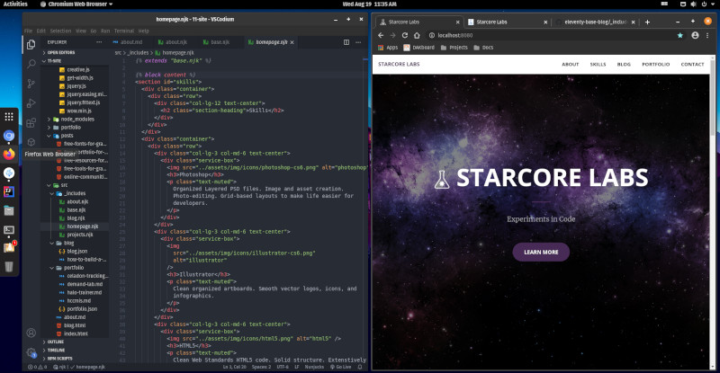
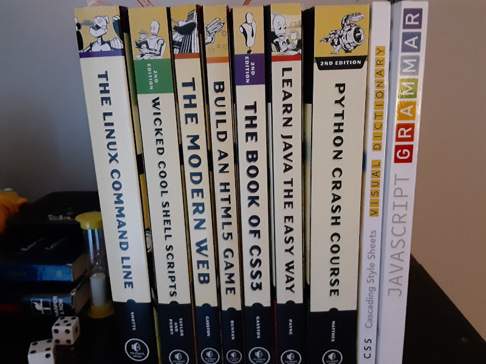

August 2020 Update
2020-08-19
Hello Friends,
Many of you have been asking what I've been doing lately? Rather than answer everyone individually I decided to write one big update.
TL;DR - I have been configuring my hardware, updating my JavaScript skills, and rebuilding my website for freelancing.
1. Zeus
Lenovo ThinkStation 300P - Main Desktop

In the last month I've switched from Linux Mint to Pop OS as my desktop OS. Both are great operating systems and have excellent compatibility with my hardware. Linux Mint has been my favorite OS and the main one I run for the last couple years.
Recently I tried Pop OS and found I liked some of the new features it offers that Linux Mint lacks. So I decided to switch and run it for 30 days to see if I like it. So far its great.
Rack
Over 2019 I built myself a budget rack of computers to use as my Homelab.

Here's a list of computers and what I use them for.
2. Cronos
Raspberry Pi B+ (1st Gen) - Used with Raspberry Pi lite OS. This has no Graphical User Interface. It is terminal only.
I SSH into it and use it for general tinkering with terminal apps. There are many interesting terminal apps for linux-based systems. Some I prefer to test before installing on my production machines.
3. Apollo
Lenovo M93P SFF - Nextcloud Server
Originally, I was using it to access personal files while I was at work. Since the company I was working for told us to work from home (and then later let me go during a pandemic) I've not needed to access it remotely.
Recently the DDNS I was using changed their terms of service. Plus, my internet speeds keep dropping. Especially the upload speeds which affects folders and files shared with friends. So I disconnected the service and removed the port forward from my router. Unfortunately for the forseeable future I won't be sharing this server anymore.
Instead I am encouraging those who are interested to spend 20 - 30 minutes and build their own server out of an old desktop or laptop. Here's the short video I used to build mine. Its a great self-hosted replacement for DropBox and Google Drive. Getting Set Up With Nextcloud - The EASY Way
4. Aether
Lenovo M93P Tiny - Ubuntu Server 20.04 running an instance of Modded Minecraft. I've been a fan of Minecraft on PC since it was released in beta.
Some parts of the modded version I run take a bit more resources and time. So its easier to leave the world running to allow things to grow and progress while I'm doing other things.
This tiny computer is running a terminal only version of Ubuntu Server. I've installed a terminal app called "Screen" which allows me to start the Minecraft server. Then disconnect from it and leave it running. These are the kinds of geeky things that make me happy.
5. Poseidon
Lenovo ThinkStation S30 - Media Server Currently running Linux Mint 19.3 + Jellyfin.
It was running Plex for a few years. Plex is free but not open source. I dislike how Plex requires an account and internet connection to run.
So, I switched to Jellyfin. It has a bit more of a learning curve. But overall it works better for me.
Even when my unreliable Comcast internet decides to stop working. I can still access my Movies and TV shows locally on my network.
6. Hermes
Dell Vostro 3700 Laptop - Influx Server running Pop OS. This is setup with security to manage the influx of data into my homelab. It monitors incoming and outgoing bits while remaining secure behind a VPN.
7. Hades
Lenovo ThinkStation S30 - Inside an Antec P100 Case. Running Linux Mint 19.3. This is my storage server. Or, overly engineered home NAS. (No Raid)
At one time it was running Open Media Vault. I switched to Linux Mint so I could remote in and sort files locally between drives.
Yes, I took the guts out of an S30 and installed them inside the P100 case. I did this because that case holds seven 3.5 drive bays. Plus, I got an adapter to put an SSD in on of the empty optical 5.5 drive bays. Allowing me to use the other seven for storage.
I use this as my cold storage. Turning it on only for short times to back up or retrieve files. It holds a lot of outdated Windows software I'll never run again since I've switched to Linux.
Recently I've been planning on purging a lot of old software and files I'll never use. It is a huge project that will take time.
8. Hydra
Lenovo ThinkStation S30 - Proxmox This last tower was running Proxmox as a hypervisor. I use it to spin up virtual operating systems and containers for small applications.
I was using it to run three different flavors of Linux for testing.
A couple months ago I formatted it and intended to reinstall Proxmox but I've been busy with my current project.
Website Rebuild

As you can see the current version of stacorelabs.com is a simple blog. However, due to recent events (being let go from my job during a pandemic). I've decided to rebuild my site and focus on freelancing.
Here's a sneak preview at the new version in the works.

I've been using Hexo.io as my static site generator. It has some flaws and inherent limitations that prevent me from building the site I want. So I'm switching to Eleventy which works better.
As of this post I'm about 65% complete. There are a few things still needing worked on. As well as minor styling tweaks to make it look good.
So far I'm loving the new site and can't wait to launch it. However, I am learning as I go which makes my progress slower than I'd prefer. But, I'd rather take my time and do it right than rush and end up with a lot of bugs. Because at some point I'll have to fix those bugs anyway.
This project has taken up the majority of my time.
Modern JavaScript
Before I dive back into learning React JS. It makes sense to learn the core features of modern JavaScript.
- ES6 classes
- The new variable declaration let/const
- Scope (local, global, lexical)
- Recursion, closures, loops, and conditionals
- Promises + Async / Await
- Arrow functions
- Spread operator
- Destructuring assignment
- Map, filter, and reduce
- ES6 module system = Imports/exports
Here's an article I found that explains some of these concepts in more detail. JavaScript Basics Before You Learn React
React JS Training
In a previous post I talked about how I was learning React JS. I pointed out a few online resources like this video. React Tutorial for Beginners
React Concepts to learn
- What is a React component?
- ReactDOM rendering
- Class vs functional components
- JSX
- State
- Event handling
- Asynchronous setState
- Props
- Refs
At that time I was learning it to be more valuable to employers. Since I've decided to freelance I've decided to keep learning it to use in my own projects. Not because it looks good on a resume but because I actually like it.
That being said, it does have a steep learning curve and its taking me a little longer than I expected to pick it up. But, I'm confident with enough repetitive practice it will become second nature.
I have a few ideas for small apps that I'd like to build. Once I've finished my website I'll start building and posting those projects.
Development Books

I've acquired a small dev library. While I have all of these books and more on my tablet. There is something relaxing about reading actual paper books.
I'm planning on setting aside time to dig into these books soon.
So that's the full update on what I've been doing and what I'm currently working on. I hope you enjoyed it.
If you have any comments, questions, or ideas. Please send them to starcorelabs@gmail.com Or message me on twitter @starcorelabs
Have a great day!